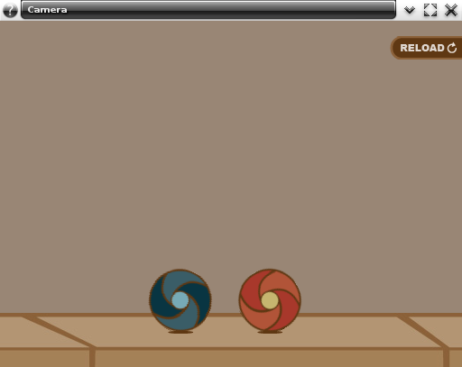

The purpose of this example is to demonstrate the EPhysics_Camera usage.
The EPhysics_Camera facilitates the usage of scenarios bigger than the viewport, that's because the EPhysics handles the position of objects which has control.

For this example we'll have an EPhysics_World, two distant EPhysics_Bodys, one with an impulse to collide each other and an EPhysics_Camera that follows the moving body using an animator.
The basic concepts like - initializing an EPhysics_World, render geometry, physics limiting boundaries, add an Ephysics_Body, associate it to evas objects, change restitution, friction and impulse properties, were already covered in EPhysics - Bouncing Ball
Camera Data Struct
While in this example we'll be working with a struct to hold some objects in our code. For clarity sake we present you the struct declaration in the following block.
struct _Camera_Data {
Test_Data base;
int old_x;
};
Opaque handle to manage Ecore Animator objects.
Adding a Camera
To move the camera in this example, we'll use an animator.
Ecore_Animator * ecore_animator_add(Ecore_Task_Cb func, const void *data)
Adds an animator to call func at every animation tick during main loop execution.
Definition: ecore_anim.c:537
In the animators function, we'll have to create a specific type of variable: EPhysics Camera And also get the worlds rendered area width to define a limit to the camera.
_camera_move_cb(void *data)
{
Camera_Data *camera_data = data;
int x, y, w;
NULL, NULL, NULL, &w, NULL, NULL);
struct _EPhysics_Camera EPhysics_Camera
Camera handle, used to change the position of the frame to be rendered.
Definition: EPhysics.h:673
EAPI void ephysics_world_render_geometry_get(const EPhysics_World *world, Evas_Coord *x, Evas_Coord *y, Evas_Coord *z, Evas_Coord *w, Evas_Coord *h, Evas_Coord *d)
Get dimensions of rendered area to be take on account by default updates.
Every world has a camera, so here we get this camera used by our EPhysics_World.
EAPI EPhysics_Camera * ephysics_world_camera_get(const EPhysics_World *world)
Get the camera used by an ephysics world.
Here we get the cameras position to after set the position based on previous.
EAPI void ephysics_camera_position_get(const EPhysics_Camera *camera, Evas_Coord *x, Evas_Coord *y)
Get camera's position.
Here we check if the camera reached the end of scenario (define the limit to the camera) then we stop the animator, else we move the camera + 2 pixel positions to the right.
if (x + w > WIDTH * 2)
{
camera_data->animator = NULL;
}
x += 2;
EAPI void ephysics_camera_position_set(EPhysics_Camera *camera, Evas_Coord x, Evas_Coord y)
Set camera's position.
#define EINA_FALSE
boolean value FALSE (numerical value 0)
Definition: eina_types.h:533
}
Updating the floor
Here we'll use 2 floor images to give the impression of an infinite ground.
Calling ephysics_world_event_callback_add() will register a callback to a type of physics world event.
EPHYSICS_CALLBACK_WORLD_CAMERA_MOVED : called if the camera position changed on physics simulation tick.
_camera_moved_cb, camera_data);
EAPI void ephysics_world_event_callback_add(EPhysics_World *world, EPhysics_Callback_World_Type type, EPhysics_World_Event_Cb func, const void *data)
Register a callback to a type of physics world event.
@ EPHYSICS_CALLBACK_WORLD_CAMERA_MOVED
camera position changed
Definition: EPhysics.h:919
In the function, we just get the cameras position to know how much the camera moved and move the same value to the floor passing it as delta_x to the function, note that we use an old_x variable to do this calculation.
_camera_moved_cb(
void *data,
EPhysics_World *world __UNUSED__,
void *event_info)
{
Camera_Data *camera_data = data;
int x;
_update_floor(floor_obj, camera_data->old_x - x);
_update_floor(floor_obj, camera_data->old_x - x);
camera_data->old_x = x;
}
struct _EPhysics_World EPhysics_World
World handle, most basic type of EPhysics.
Definition: EPhysics.h:901
#define DBG(...)
Macro for logging Eina debug messages.
Definition: eina_file_common.h:179
Efl_Canvas_Object Evas_Object
An Evas Object handle.
Definition: Evas_Common.h:185
Here we get the floors position and plus the delta_x value to move the floor in the same "velocity".
{
int fx, x, y;
fx = x + delta;
int Evas_Coord
Type used for coordinates (in pixels, int).
Definition: Evas_Common.h:116
EVAS_API void evas_object_geometry_get(const Evas_Object *eo_obj, Evas_Coord *x, Evas_Coord *y, Evas_Coord *w, Evas_Coord *h)
Retrieves the position and (rectangular) size of the given Evas object.
Definition: evas_object_main.c:1335
We use 2 floor images because whenever one exits the screen by the left side, another is being shown, when it happens the one which exit the screen is sent to the right side, entering into an infinite loop, giving the impression of an infinite ground image. Its important to note that we need to use the fx to don't gap the images.
if (fx < -FLOOR_WIDTH)
fx += 2 * FLOOR_WIDTH;
}
EVAS_API void evas_object_move(Evas_Object *obj, Evas_Coord x, Evas_Coord y)
Move the given Evas object to the given location inside its canvas' viewport.
Definition: evas_object_main.c:1171
Here we finish the example. The full source code can be found at test_camera.c.